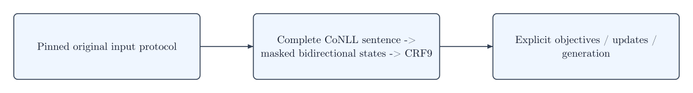
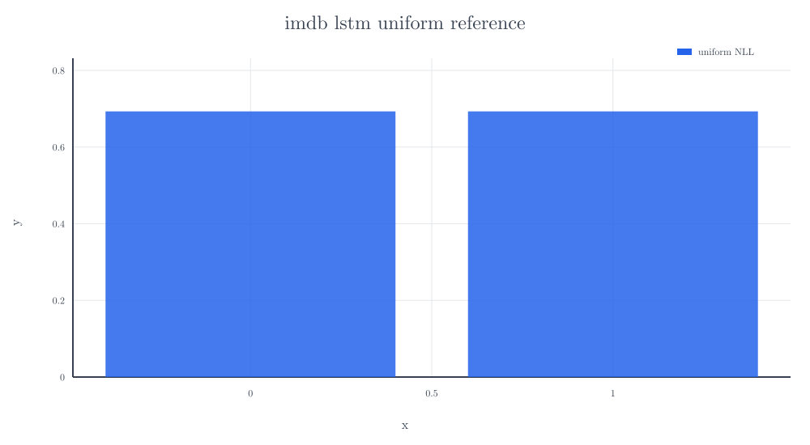
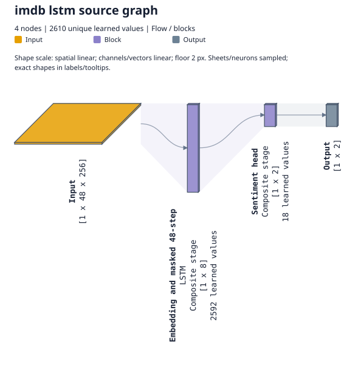
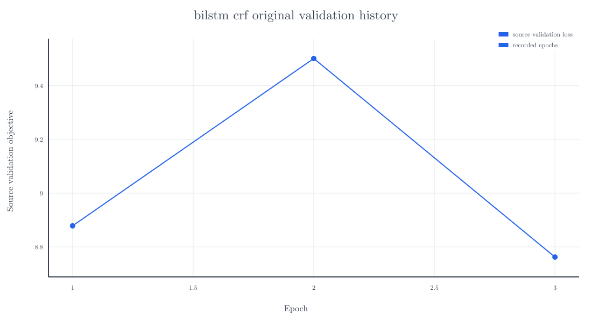
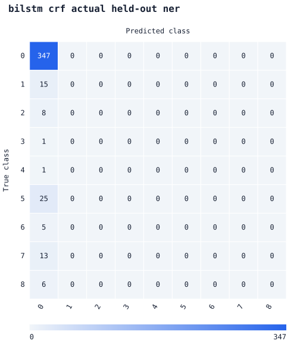

BiLSTM-CRF: Explicit Conditional Sequence Likelihood and Viterbi Decoding
Abstract
The exact upstream preparation protocol and the complete editable native C++ experiment preserve original source rows, seeds, fitting budgets and validation. Canonical components expose mathematical graphs; every objective, optimizer step, fitting/generation loop and deployment comparison remains visible.
Follow the actual data and model
Complete CoNLL sentence -> masked bidirectional states -> CRF9.
#include <dm/dm.hpp>
int main(){std::filesystem::create_directories("build");dm::graphics::Diagram d(29,1200);dm::graphics::DiagramNodeStyle s;s.width=14;s.height=5;s.font_size=23;d.node("source",{-18,0},"Pinned original input protocol",s).node("graph",{0,0},"Complete CoNLL sentence -> masked bidirectional states -> CRF9",s).node("report",{18,0},"Explicit objectives / updates / generation",s).edge("source","graph").edge("graph","report").save_svg("build/bilstm_crf_method.svg");}
Prepare the original inputs through datamunge
The native adapter follows the recovered upstream preparation script, including source checksums, source row identities, fitting-only vocabulary/palette selection and held-out boundaries. Runtime preparation calls no Python or another checkout. Native byte-valued image arrays are stored as Int32 with identical numeric values. Optional external TensorFlow recordings are separate; their absence does not establish external parity.
#include <dm/dm.hpp>
int main(){auto path=dm::datasets::prepare_example_data("bilstm_tagging");std::print("Prepared original bilstm_tagging protocol at {}\n",path);}Prepared original bilstm_tagging protocol at /home/jordan/.cache/datamunge/datasets/bilstm_tagging
A hand-checkable likelihood reference
A uniform categorical distribution over9 classes gives negative log-likelihood log(9). For language/image models this is nats per predicted token; for a sequence tagger it is a single independent-token reference, not its CRF sequence likelihood.
#include <dm/dm.hpp>
int main(){auto logp=dm::nn::log_softmax(dm::nn::zeros({1,9}),1);double computed=-logp.to_vector<double>()[0];std::print("| classes | native uniform NLL | analytic NLL |\n|---:|---:|---:|\n| 9 | {:.9f} | {:.9f} |\n",computed,std::log(9.));dm::graphics::RPlot::create().bars(std::vector<double>{0,1},std::vector<double>{computed,std::log(9.)},"uniform NLL",{37,99,235}).ylim(0,std::log(9.)*1.2).title("bilstm crf uniform reference").size(1000,550).save_svg("build/bilstm_crf_worked.svg");}| classes | native uniform NLL | analytic NLL |
|---|---|---|
| 9 | 2.197224617 | 2.197224577 |

Inspect the native graph
The preview groups actual native graph endpoints into named stages, using independent source-sized parameters. The grouped recurrent or attention block retains the full source context. Cache/filter/generation loops and CRF decoding remain explicit in the program below.
#include <dm/dm.hpp>
int main(){namespace n=dm::nn;namespace m=n::models;std::filesystem::create_directories("build");n::ParameterStore p(0);n::Module network([&](const n::Tensor&x){auto y=m::bilstm_crf::Encode(p,n::cast(x,n::DType::Int32),n::from_vector(std::vector<int>{24}));n::model_stage("Embedding and masked bidirectional LSTM",x,y.features);return n::model_stage("NER emissions",y.features,y.unaries);},"bilstm crf source graph");n::ModelPlotOptions options;options.detail=n::ModelPlotDetail::Blocks;options.sizing.minimum_extent=2;options.sizing.max_planes=2;network.plot(n::zeros({1,24}),options).save_svg("build/bilstm_crf_network.svg");}
Complete preserved source experiment
Original epoch/batch budgets, random streams, source guard tests and weak outcomes are preserved. All fitting and generation code is editable. This program uses native C++ data preparation and mathematical components; it does not execute the upstream Python preparers. Saved arrays and source stdout will be compared against a frozen copy of the pre-conversion program on the exact same prepared inputs. No external-framework equivalence is inferred when recordings are absent.
#include <dm/dm.hpp>
// CMD: just run-nn bilstm_crf
// End-to-end BiLSTM-CRF NER with exact partition/marginals/Viterbi and
// exhaustive toy proof; three epochs.
//
// Port of tflow's bilstm_crf. Preparation (in ~/projects/tflow_examples):
// the pinned CoNLL subset in output/datasets/bilstm_tagging (bilstm_tagging.npz,
// 128 fit / 32 validation / 32 test sentences, length 2..24, 512-word
// vocabulary, 9 IOB2 NER tags).
// Two independent 8-unit LSTMs give 16-D offline context, a linear head gives
// NER unaries and a linear-chain CRF (9x9 transition[from,to], 9 start/9 end
// scores) gives the conditional sequence likelihood. 5436 parameters in 12
// tensors; Adam .01, batch 8, three epochs (48 updates) on the mean sequence NLL.
// Checks: a 3-tag CRF fixture against all 121 paths for lengths 0..4 (and
// against TF's native values when tflow's fixture is present); when tflow's
// recorded run is present, the forward pass, every loss derivative and the
// whole 48-update training trajectory are replayed from TF's initial weights
// and compared. Then the port trains from its own initialisation and audits
// padding/empty/causality/restore/label-free decoding like the TF version.
// Options: epochs=3 data=PATH out=PATH tf=PATH (tflow's output/models/bilstm_crf).
// Output: output/nn/models/bilstm_crf/.
// Editable workflow support: bilstm_crf.hpp
// End-to-end BiLSTM-CRF conditional sequence likelihood (port of tflow's
// common/ml/bilstm_crf.h and common/nn/bilstm_tagging.h): a 512-word
// embedding (8-D), two independent 8-unit LSTMs (forward and backward, state
// frozen past each sentence's length), a linear NER head on the 16-D
// context and a linear-chain CRF with transition[from, to], start and end
// scores. Sentences are 24 tokens, padded.
namespace bilstm_crf {
namespace nn = datamunge::nn;
using nn::Tensor;
using namespace dm::nn::models::bilstm_crf;
inline TaggingBatch TaggingRows(const TaggingBatch& x, const std::vector<std::int64_t>& rows) {
return {nn::take_rows(x.input, rows), nn::take_rows(x.lengths, rows), nn::take_rows(x.pos, rows),
nn::take_rows(x.ner, rows), nn::take_rows(x.source_ids, rows)};
}
inline Tensor Named(const nn::NamedTensors& arrays, const std::string& key) {
for (const auto& [name, t] : arrays)
if (name == key) return t;
throw std::runtime_error("missing array " + key);
}
struct Objective {
Path path;
Tensor log_partition, gold_score, nll, loss;
};
/// Mean conditional sequence NLL of the gold NER tags.
inline Objective Evaluate(nn::ParameterStore& p, const TaggingBatch& x) {
Objective o;
o.path = Encode(p, x.input, x.lengths);
const Crf crf = CrfParams(p);
o.log_partition = nn::crf_log_norm(o.path.unaries, x.lengths, crf.transition, crf.start, crf.end);
o.gold_score = nn::crf_sequence_score(o.path.unaries, x.ner, x.lengths, crf.transition, crf.start, crf.end);
o.nll = nn::sub(o.log_partition, o.gold_score);
o.loss = nn::mean(o.nll);
return o;
}
/// Viterbi decoding from words and lengths only (-1 in padded positions).
inline nn::CrfDecoded Decode(nn::ParameterStore& p, const TaggingBatch& x) {
nn::NoGradGuard guard;
const Path path = Encode(p, x.input, x.lengths);
const Crf crf = CrfParams(p);
return nn::crf_decode(path.unaries, x.lengths, crf.transition, crf.start, crf.end, -1);
}
/// Creates every parameter (in tflow's order) without running data through.
inline void Build(nn::ParameterStore& p) {
TaggingBatch dummy{nn::zeros({1, kSteps}, nn::DType::Int32), nn::ones({1}, nn::DType::Int32), {}, {}, {}};
nn::NoGradGuard guard;
Encode(p, dummy.input, dummy.lengths);
CrfParams(p);
}
} // namespace bilstm_crf
// Editable workflow support: checks.hpp
// Small runtime checks used by the executable nn examples. They stay on in
// Release builds and make the example exit nonzero on failure, so `just
// run-all-nn` doubles as a regression test against the recorded TF numbers.
// Editable workflow support: runtime.hpp
// Bounded demonstrations by default; opt into convergence experiments explicitly.
namespace example_runtime {
inline bool Full() {
const char* value = std::getenv("DATAMUNGE_EXAMPLES_FULL");
return value && std::string(value) == "1";
}
template <typename T> T Limit(T requested, T quick_limit) {
return Full() ? requested : std::min(requested, quick_limit);
}
inline void Describe() {
if (!Full())
std::cout << "Quick demonstration: bounded training; convergence metrics require "
"DATAMUNGE_EXAMPLES_FULL=1.\n";
}
} // namespace example_runtime
namespace check {
inline void Require(bool condition, const std::string& message) {
if (!condition) throw std::runtime_error(message);
}
// A short demonstration checks execution, derivatives and persistence; reaching
// a published accuracy/return requires the separately requested full schedule.
inline void TrainingQuality(bool condition, const std::string& message) {
if (example_runtime::Full()) Require(condition, message);
else std::cout << " full-training quality check deferred: " << message << '\n';
}
inline void Near(double actual, double expected, double tolerance, const std::string& message) {
if (!std::isfinite(actual) || !std::isfinite(expected) || std::abs(actual - expected) > tolerance)
throw std::runtime_error(message + ": got " + std::to_string(actual) + ", expected " + std::to_string(expected));
}
/// Expects `f` to throw; returns the message.
template <typename F>
std::string Throws(F&& f, const std::string& message) {
try {
f();
} catch (const std::exception& e) {
return e.what();
}
throw std::runtime_error(message + ": expected an exception");
}
} // namespace check
inline void Header(const std::string& title) {
const std::size_t pad = title.size() < 60 ? 60 - title.size() : 0;
std::cout << "\n== " << title << " " << std::string(pad, '=') << "\n";
}
// Editable workflow support: paths.hpp
// Where the nn example ports read datasets and write their outputs.
//
// Datasets: $DATAMUNGE_DATA_DIR, or the user's cache. Public datasets are
// prepared by the example data loaders when first needed.
// Outputs (checkpoints, histories, fixtures): $DATAMUNGE_OUTPUT_DIR, or
// output/nn relative to the working directory (`just run-nn` runs from the
// repository root). Both are created on demand by the caller.
// Editable workflow support: dataset_assets.hpp
namespace dataset_assets{inline std::string DataRoot(){return dm::datasets::data_home();}}
namespace paths {
inline std::filesystem::path DataRoot() {
return dataset_assets::DataRoot();
}
/// DataRoot() / name, e.g. Dataset("mnist").
inline std::filesystem::path Dataset(const std::string& name) { return DataRoot() / name; }
inline std::filesystem::path OutputRoot(){return std::filesystem::absolute("build/recovered-language");}
/// OutputRoot() / relative, created as a directory.
inline std::filesystem::path OutputDir(const std::string& relative) {
auto dir = OutputRoot() / relative;
std::filesystem::create_directories(dir);
return dir;
}
} // namespace paths
// Editable workflow support: tagging_metrics.hpp
// Exact entity spans with explicit I-after-O/type-change repair; padding
// excluded by valid lengths (port of tflow's common/ml/tagging_metrics.h).
// Tags are IOB2 with 0 = O, odd = B-type, even = I-type, type = (tag + 1) / 2.
namespace tagging {
namespace nn = datamunge::nn;
using EntitySpan = std::tuple<int, int, int>; // [start, end), type
inline std::set<EntitySpan> EntitySpans(const std::vector<int>& tags) {
std::set<EntitySpan> result;
int start = -1, type = 0;
for (int t = 0; t <= static_cast<int>(tags.size()); ++t) {
const int tag = t < static_cast<int>(tags.size()) ? tags[t] : 0;
const int kind = tag ? (tag + 1) / 2 : 0;
const bool begin = tag % 2 == 1;
if (start >= 0 && (tag == 0 || kind != type || begin)) {
result.emplace(start, t, type);
start = -1;
}
if (tag && start < 0) {
start = t;
type = kind;
}
}
return result;
}
struct TaggingMetrics {
int tokens = 0, ner_correct = 0, true_positive = 0, predicted_entities = 0, gold_entities = 0;
double NerAccuracy() const { return tokens ? double(ner_correct) / tokens : 0; }
double EntityPrecision() const { return predicted_entities ? double(true_positive) / predicted_entities : 0; }
double EntityRecall() const { return gold_entities ? double(true_positive) / gold_entities : 0; }
double EntityF1() const {
return predicted_entities + gold_entities ? 2. * true_positive / (predicted_entities + gold_entities) : 0;
}
};
/// Scores predicted against gold NER tags [B, T] over the first lengths[b] positions.
inline TaggingMetrics ScoreTagging(const nn::Tensor& predicted, const nn::Tensor& gold, const nn::Tensor& lengths) {
TaggingMetrics out;
const auto p = predicted.to_vector<int>(), g = gold.to_vector<int>(), n = lengths.to_vector<int>();
const int T = static_cast<int>(predicted.shape()[1]);
for (std::size_t b = 0; b < n.size(); ++b) {
std::vector<int> a, e;
for (int t = 0; t < n[b]; ++t) {
++out.tokens;
out.ner_correct += p[b * T + t] == g[b * T + t];
a.push_back(p[b * T + t]);
e.push_back(g[b * T + t]);
}
const auto sa = EntitySpans(a), sg = EntitySpans(e);
out.predicted_entities += static_cast<int>(sa.size());
out.gold_entities += static_cast<int>(sg.size());
for (const auto& s : sa) out.true_positive += static_cast<int>(sg.count(s));
}
return out;
}
/// Per-token argmax of logits [B, T, K] on valid positions, -1 elsewhere (int32 [B, T]).
inline nn::Tensor TaggingArgmax(const nn::Tensor& logits, const nn::Tensor& lengths) {
const auto B = logits.shape()[0], T = logits.shape()[1], K = logits.shape()[2];
const auto v = logits.to_vector<float>();
const auto n = lengths.to_vector<int>();
std::vector<std::int32_t> out(static_cast<std::size_t>(B * T), -1);
for (std::int64_t b = 0; b < B; ++b)
for (std::int64_t t = 0; t < n[b]; ++t) {
const float* row = v.data() + (b * T + t) * K;
out[b * T + t] = static_cast<std::int32_t>(std::max_element(row, row + K) - row);
}
return nn::from_vector(out, {B, T});
}
} // namespace tagging
namespace nn = datamunge::nn;
using nn::Tensor;
using namespace bilstm_crf;
namespace {
double MaxAbsDiff(const Tensor& a, const Tensor& b) {
const auto x = a.to_vector<double>(), y = b.to_vector<double>();
check::Require(x.size() == y.size(), "compared tensors have the same size");
double m = 0;
for (std::size_t i = 0; i < x.size(); ++i) m = std::max(m, std::abs(x[i] - y[i]));
return m;
}
double PathScore(const std::vector<double>& U, std::int64_t b, std::int64_t T, std::int64_t K,
const std::vector<int>& y, const std::vector<double>& A, const std::vector<double>& st,
const std::vector<double>& en) {
if (y.empty()) return 0;
double s = st[y[0]] + en[y.back()];
for (std::size_t t = 0; t < y.size(); ++t) {
s += U[(b * T + static_cast<std::int64_t>(t)) * K + y[t]];
if (t) s += A[y[t - 1] * K + y[t]];
}
return s;
}
// Exhaustive 3-tag, length-0..4 CRF fixture (tflow's common/ml/crf_fixture.h).
void RunCrfFixture(const std::filesystem::path& root, const std::filesystem::path& tf_root) {
const std::vector<float> uv{.2f, 1.2f, 0, .7f, .3f, 1.1f, .9f, .2f, .4f, .4f, 1.f, .3f};
const std::vector<float> tv{.6f, -.1f, .2f, -.4f, 1.2f, -.6f, .1f, -.2f, .5f}, sv{.1f, .2f, -.1f}, ev{.3f, -.2f, .1f};
const int gold[4] = {0, 1, 2, 1};
std::vector<float> unary;
std::vector<std::int32_t> lengths, labels;
for (int b = 0; b < 5; ++b) {
lengths.push_back(b);
for (int t = 0; t < 4; ++t) {
labels.push_back(gold[t]);
for (int c = 0; c < 3; ++c) unary.push_back(uv[t * 3 + c]);
}
}
Tensor U = nn::from_vector(unary, {5, 4, 3}), A = nn::from_vector(tv, {3, 3}), S = nn::from_vector(sv),
E = nn::from_vector(ev);
const Tensor len = nn::from_vector(lengths), lab = nn::from_vector(labels, {5, 4});
for (Tensor* t : {&U, &A, &S, &E}) t->requires_grad_(true);
const Tensor z = nn::crf_log_norm(U, len, A, S, E), gs = nn::crf_sequence_score(U, lab, len, A, S, E);
const Tensor nll = nn::sub(z, gs), loss = nn::mean(nll);
const auto g = nn::grad(loss, {U, A, S, E}, {true, false, false});
const auto pg = nn::grad(nn::sum(z), {U, A, S, E});
const Tensor alphas = nn::crf_forward(U, len, A, S).detach();
const auto decoded = nn::crf_decode(U.detach(), len, A.detach(), S.detach(), E.detach(), -1);
const auto Uv = U.to_vector<double>(), Av = A.to_vector<double>(), Sv = S.to_vector<double>(), Ev = E.to_vector<double>();
const auto zv = z.to_vector<double>(), gv = gs.to_vector<double>(), marg = pg[0].to_vector<double>();
const auto vt = decoded.tags.to_vector<int>();
int total_paths = 0;
for (int b = 0; b < 5; ++b) {
int paths = 1;
for (int t = 0; t < b; ++t) paths *= 3;
double maximum = -INFINITY;
std::vector<int> best_path;
std::vector<double> scores;
for (int code = 0; code < paths; ++code) {
std::vector<int> y(b);
int c = code;
for (int t = b - 1; t >= 0; --t) y[t] = c % 3, c /= 3;
const double s = PathScore(Uv, b, 4, 3, y, Av, Sv, Ev);
scores.push_back(s);
if (s > maximum) maximum = s, best_path = y;
}
total_paths += paths;
double mass = 0;
for (double s : scores) mass += std::exp(s - maximum);
check::Near(b ? maximum + std::log(mass) : 0.0, zv[b], 2e-6, "allPathsExactPartitionEnumeration");
check::Near(b ? maximum : 0.0, decoded.scores.to_vector<double>()[b], 1e-12, "ViterbiMatchesExhaustiveBestPathScore");
for (int t = 0; t < b; ++t) check::Require(vt[b * 4 + t] == best_path[t], "ViterbiMatchesExhaustiveBestLabels");
check::Near(PathScore(Uv, b, 4, 3, std::vector<int>(gold, gold + b), Av, Sv, Ev), gv[b], 1e-6,
"nativeGoldUnariesPlusTransitionAndEndpoints");
for (int t = 0; t < 4; ++t) {
double sum = 0;
for (int c = 0; c < 3; ++c) sum += marg[(b * 4 + t) * 3 + c];
check::Near(sum, t < b ? 1 : 0, 2e-6, "actualMarginalsSumToOneOnlyOnValidPositions");
}
}
check::Require(total_paths == 121, "enumerateAll121PathsAcrossLengthsZeroThroughFour");
int differs = 0;
for (int t = 0; t < 4; ++t) {
const float* row = unary.data() + 4 * 12 + t * 3;
differs += vt[4 * 4 + t] != std::max_element(row, row + 3) - row;
}
check::Require(differs > 0, "fixtureViterbiIsNotIndependentUnaryArgmax");
nn::NamedTensors out{{"log_partition", z.detach()}, {"gold_score", gs.detach()}, {"nll", nll.detach()},
{"alphas", alphas}, {"loss", loss.detach()}};
const char* names[4] = {"unaries", "transition", "start", "end"};
for (int j = 0; j < 4; ++j) {
out.emplace_back(std::string("gradient_") + names[j], g[j]);
out.emplace_back(std::string("partition_gradient_") + names[j], pg[j]);
}
out.emplace_back("viterbi", decoded.tags);
out.emplace_back("viterbi_scores", decoded.scores);
nn::save_npz((root / "crf_fixture_inputs.npz").string(),
{{"unaries", U.detach()}, {"transition", A.detach()}, {"start", S.detach()}, {"end", E.detach()},
{"lengths", len}, {"labels", lab}});
nn::save_npz((root / "crf_fixture_outputs.npz").string(), out);
std::cout << " CRF fixture: all 121 paths, partition/gold/Viterbi/marginals exact";
if (std::filesystem::exists(tf_root / "crf_fixture_outputs.npz")) {
const auto tf = nn::load_npz((tf_root / "crf_fixture_outputs.npz").string());
double worst = 0;
for (const auto& [name, value] : out) {
if (name == "alphas") {
worst = std::max(worst, MaxAbsDiff(value, nn::slice_axis(Named(tf, name), 1, 1, 5)));
continue;
}
worst = std::max(worst, MaxAbsDiff(value, Named(tf, name)));
}
check::Near(worst, 0, 2e-6, "every CRF fixture value and derivative matches TF's native output");
std::cout << "; vs TF native fixture max diff=" << worst;
}
std::cout << "\n";
}
TaggingBatch Split(const nn::NamedTensors& data, const std::string& split) {
return {Named(data, split + "_input"), Named(data, split + "_lengths"), Named(data, split + "_pos"),
Named(data, split + "_ner"), Named(data, split + "_source_ids")};
}
nn::OptimizerConfig AdamConfig() {
nn::OptimizerConfig c;
c.kind = nn::OptimizerKind::Adam;
return c;
}
/// One epoch of Adam updates over the fit rows; returns the visited rows.
void TrainEpoch(nn::ParameterStore& p, nn::Optimizer& opt, nn::BatchOrder& order, const TaggingBatch& fit,
std::ofstream* batches, int epoch, int& updates) {
order.begin_epoch();
for (;;) {
const auto rows = order.next();
if (rows.empty()) break;
const auto o = Evaluate(p, TaggingRows(fit, rows));
opt.step(nn::grad(o.loss, p.parameters()));
if (batches)
for (auto r : rows) *batches << epoch << '\t' << updates << '\t' << r << '\n';
++updates;
}
}
// Replays tflow's recorded run from TF's own initial weights.
void TfParity(const std::filesystem::path& tf_root, const std::vector<TaggingBatch>& pools, int epochs) {
if (!std::filesystem::exists(tf_root / "initial_arrays.npz") || !std::filesystem::exists(tf_root / "first_batch.npz")) {
std::cout << " (tflow run not found at " << tf_root << "; TF parity skipped)\n";
return;
}
nn::ParameterStore p(1);
Build(p);
for (const auto& [name, value] : nn::load_npz((tf_root / "initial_arrays.npz").string())) p.set(name, value);
const auto fb = nn::load_npz((tf_root / "first_batch.npz").string());
TaggingBatch first{Named(fb, "input"), Named(fb, "lengths"), Named(fb, "pos"), Named(fb, "ner"), Named(fb, "source_ids")};
const auto ref = nn::load_npz((tf_root / "first_forward.npz").string());
auto o = Evaluate(p, first);
const auto crf = CrfParams(p);
// marginals and expected counts are derivatives of sum log Z
const auto marg = nn::grad(nn::sum(o.log_partition), {o.path.unaries, crf.transition, crf.start, crf.end},
{true, false, false});
std::map<std::string, Tensor> ours{{"unaries", o.path.unaries}, {"log_partition", o.log_partition},
{"gold_score", o.gold_score}, {"nll", o.nll}, {"loss", o.loss},
{"features", o.path.features}, {"forward_states", o.path.forward_states},
{"backward_aligned", o.path.backward_aligned}, {"marginals", marg[0]},
{"expected_transition_counts", marg[1]}, {"expected_start_counts", marg[2]},
{"expected_end_counts", marg[3]}};
double forward = 0;
for (const auto& [name, value] : ours) forward = std::max(forward, MaxAbsDiff(value, Named(ref, name)));
check::Near(forward, 0, 2e-5, "first-batch forward, partition, marginals and expected counts match TF");
const auto grads = nn::grad(o.loss, p.parameters());
const auto tfg = nn::load_npz((tf_root / "initial_gradients.npz").string());
double gerr = 0;
for (std::size_t i = 0; i < grads.size(); ++i) gerr = std::max(gerr, MaxAbsDiff(grads[i], Named(tfg, p.names()[i])));
check::Near(gerr, 0, 2e-5, "all 12 initial parameter gradients match TF");
std::cout << " TF parity from TF's initial weights: first batch forward/partition/marginals max diff=" << forward
<< ", all parameter gradients max diff=" << gerr << "\n";
// Same batch order (BatchOrder reproduces tflow's), same Adam: replay the run.
std::ifstream history(tf_root / "history.tsv");
std::string line;
std::getline(history, line);
nn::Optimizer opt(p, .01, AdamConfig());
nn::BatchOrder order(128, 8, 44019);
int updates = 0;
double worst = 0;
for (int epoch = 1; epoch <= epochs; ++epoch) {
TrainEpoch(p, opt, order, pools[0], nullptr, epoch, updates);
double val;
{
nn::NoGradGuard guard;
val = Evaluate(p, pools[1]).loss.item<double>();
}
double tf_val = NAN;
if (std::getline(history, line)) tf_val = std::stod(line.substr(line.find('\t') + 1));
std::cout << " epoch" << epoch << " validationLoss=" << val << " (TF " << tf_val << ")\n";
if (std::isfinite(tf_val)) worst = std::max(worst, std::abs(val - tf_val));
}
if (epochs == 3 && std::filesystem::exists(tf_root / "model_arrays.npz")) {
double werr = 0;
const auto tfw = nn::load_npz((tf_root / "model_arrays.npz").string());
for (const auto& name : p.names()) werr = std::max(werr, MaxAbsDiff(p.at(name), Named(tfw, name)));
nn::NoGradGuard guard;
const double test = Evaluate(p, pools[2]).loss.item<double>();
const auto dec = Decode(p, pools[2]);
const auto tfd = nn::load_npz((tf_root / "decoded.npz").string());
const auto a = dec.tags.to_vector<int>(), b = Named(tfd, "viterbi").to_vector<int>();
int same = 0;
for (std::size_t i = 0; i < a.size(); ++i) same += a[i] == b[i];
std::cout << " TF replay after 48 updates: max weight diff=" << werr << ", test NLL=" << test
<< " (TF 10.5985), Viterbi tags identical " << same << "/" << a.size() << "\n";
check::Near(worst, 0, 2e-3, "validation loss trajectory tracks TF's recorded run");
check::Near(werr, 0, 2e-3, "trained weights track TF's after 48 Adam updates");
}
}
} // namespace
int main(int argc, char** argv) {
try {
const auto start = std::chrono::steady_clock::now();
int epochs = 3;
std::filesystem::path data = paths::Dataset("bilstm_tagging"), root = paths::OutputRoot() / "models/bilstm_crf";
std::filesystem::path tf_root = paths::DataRoot().parent_path() / "models" / "bilstm_crf";
for (int i = 1; i < argc; ++i) {
const std::string a = argv[i];
if (a.rfind("epochs=", 0) == 0) epochs = std::stoi(a.substr(7));
else if (a.rfind("data=", 0) == 0) data = a.substr(5);
else if (a.rfind("out=", 0) == 0) root = a.substr(4);
else if (a.rfind("tf=", 0) == 0) tf_root = a.substr(3);
else throw std::invalid_argument("epochs=N data=PATH out=PATH tf=PATH");
}
check::Require(epochs > 0 && epochs <= 100, "threeCheapDefaultEpochs");
std::filesystem::create_directories(root);
RunCrfFixture(root, tf_root);
check::Require(tagging::EntitySpans({2, 2, 0, 3, 4, 5}) == std::set<tagging::EntitySpan>{{0, 2, 1}, {3, 5, 2}, {5, 6, 3}},
"explicitIstartBIORepairAndExactSpanBoundaries");
const auto arrays = nn::load_npz((data / "bilstm_tagging.npz").string());
std::vector<TaggingBatch> pools{Split(arrays, "fit"), Split(arrays, "validation"), Split(arrays, "test")};
for (auto f : {"manifest.json", "vocabulary.txt"})
if (std::filesystem::exists(data / f))
std::filesystem::copy_file(data / f, root / f, std::filesystem::copy_options::overwrite_existing);
TfParity(tf_root, pools, epochs);
// ---- own initialisation -------------------------------------------------------------
nn::ParameterStore model(45003);
Build(model);
check::Require(model.count() == 5436 && model.size() == 12, "6102EmbeddingTwoIndependentLSTMsAndPOSNERHeads");
model.save((root / "initial_arrays.npz").string());
const Tensor pad_row0 = nn::select(model.at("embedding/W"), 0, 0).clone();
nn::Optimizer opt(model, .01, AdamConfig());
nn::BatchOrder order(128, 8, 44019);
std::ofstream history(root / "history.tsv"), batches(root / "batches.tsv");
history.precision(17);
history << "epoch\tvalidation_loss\tvalidation_entity_f1\n";
batches << "epoch\tstep\trow\n";
int updates = 0;
for (int epoch = 1; epoch <= epochs; ++epoch) {
TrainEpoch(model, opt, order, pools[0], &batches, epoch, updates);
nn::NoGradGuard guard;
const double val = Evaluate(model, pools[1]).loss.item<double>();
const auto score = tagging::ScoreTagging(Decode(model, pools[1]).tags, pools[1].ner, pools[1].lengths);
history << epoch << '\t' << val << '\t' << score.EntityF1() << '\n';
std::cout << "epoch" << epoch << " validationLoss=" << val << " entityF1=" << score.EntityF1() << std::endl;
}
model.save((root / "final.npz").string());
nn::ParameterStore deployed(0);
Build(deployed);
deployed.load((root / "final.npz").string());
for (const auto& name : model.names())
check::Require(MaxAbsDiff(model.at(name), deployed.at(name)) == 0, "all5436TaggerWeightsRestoreBitexact");
const auto before = deployed.flatten();
// ---- audits on the test split -----------------------------------------------------------
const TaggingBatch& test = pools[2];
auto output = Evaluate(deployed, test);
const auto crf = CrfParams(deployed);
const auto parts = nn::grad(nn::sum(output.log_partition), {output.path.unaries, crf.transition, crf.start, crf.end},
{true, false, false});
const auto lengths = test.lengths.to_vector<int>();
const int B = static_cast<int>(lengths.size());
// padding invariance: arbitrary words in padded positions change nothing
TaggingBatch padded = test, last = test;
{
auto in = test.input.to_vector<std::int32_t>(), lw = in;
int pad_positions = 0;
for (int b = 0; b < B; ++b) {
for (int t = lengths[b]; t < kSteps; ++t, ++pad_positions) in[b * kSteps + t] = 2 + (b + t) % 510;
lw[b * kSteps + lengths[b] - 1] = 1;
}
padded.input = nn::from_vector(in, {B, kSteps});
last.input = nn::from_vector(lw, {B, kSteps});
check::Require(pad_positions > 100, "nonVacuousPadding");
}
nn::NoGradGuard guard;
const auto padout = Evaluate(deployed, padded), lastout = Evaluate(deployed, last);
check::Require(MaxAbsDiff(padout.path.unaries, output.path.unaries) == 0 &&
MaxAbsDiff(padout.nll, output.nll) == 0,
"allTaggerPathsLossesAndPartialsPaddingInvariant");
{
const auto f0 = output.path.forward_states.to_vector<float>(), f1 = lastout.path.forward_states.to_vector<float>();
for (int b = 0; b < B; ++b)
for (int t = 0; t < lengths[b]; ++t) // states 0..length-1 precede the last word
for (int j = 0; j < kUnits; ++j)
check::Require(f0[(b * 25 + t) * kUnits + j] == f1[(b * 25 + t) * kUnits + j],
"lastWordChangeCannotAffectEarlierFORWARDstates");
const auto a0 = output.path.backward_aligned.to_vector<float>(), a1 = lastout.path.backward_aligned.to_vector<float>();
double future = 0;
for (int b = 0; b < B; ++b)
for (int j = 0; j < kUnits; ++j) future = std::max(future, double(std::abs(a0[b * kSteps * kUnits + j] - a1[b * kSteps * kUnits + j])));
check::Require(future > 0, "backwardContextAtFirstWordSeesTheLastWord");
}
TaggingBatch empty = TaggingRows(test, {0, 1});
empty.lengths = nn::zeros({2}, nn::DType::Int32);
const auto emptyout = Evaluate(deployed, empty);
check::Require(nn::sum(nn::abs(emptyout.path.unaries)).item<double>() == 0 &&
nn::sum(nn::abs(emptyout.nll)).item<double>() == 0 &&
nn::sum(nn::abs(emptyout.log_partition)).item<double>() == 0,
"zeroLengthTaggingHasNoTokenLossUnariesOrState");
const auto empty_decoded = Decode(deployed, empty);
for (int v : empty_decoded.tags.to_vector<int>()) check::Require(v == -1, "emptyViterbiHasOnlyPaddingLabels");
for (double v : empty_decoded.scores.to_vector<double>()) check::Require(v == 0, "emptyViterbiScoreIsZero");
check::Require(MaxAbsDiff(nn::select(deployed.at("embedding/W"), 0, 0), pad_row0) == 0, "maskedPADWordEmbeddingNeverUpdated");
const auto viterbi = Decode(deployed, test);
const auto again = Decode(deployed, test);
check::Require(MaxAbsDiff(viterbi.tags, again.tags) == 0 && MaxAbsDiff(viterbi.scores, again.scores) == 0,
"repeatTaggerInferenceBitexact");
const auto greedy = tagging::TaggingArgmax(output.path.unaries, test.lengths);
const auto U = output.path.unaries.to_vector<double>(), Av = crf.transition.to_vector<double>(),
Sv = crf.start.to_vector<double>(), Ev = crf.end.to_vector<double>();
const auto tags = viterbi.tags.to_vector<int>();
const auto sc = viterbi.scores.to_vector<double>();
const auto nll = output.nll.to_vector<double>(), logz = output.log_partition.to_vector<double>();
const auto marg = parts[0].to_vector<double>();
int transitions_expected = 0;
for (int b = 0; b < B; ++b) {
transitions_expected += std::max(0, lengths[b] - 1);
check::Require(nll[b] >= -1e-4 && logz[b] + 1e-4 >= sc[b], "goldAndBestPathIncludedInNormalizedSequenceDistribution");
std::vector<int> y(tags.begin() + b * kSteps, tags.begin() + b * kSteps + lengths[b]);
check::Near(PathScore(U, b, kSteps, kTags, y, Av, Sv, Ev), sc[b], 1e-9, "decodedPathRescoresToActualViterbiMaximum");
for (int t = 0; t < kSteps; ++t) {
double mass = 0;
for (int c = 0; c < kTags; ++c) mass += marg[(b * kSteps + t) * kTags + c];
check::Near(mass, t < lengths[b] ? 1 : 0, 3e-5, "truePosteriorMarginalsNormalizeOnlyOnValidPositions");
}
}
check::Near(nn::sum(parts[1]).item<double>(), transitions_expected, 1e-3, "expectedTransitionCountsSumToActualNumberOfEdges");
check::Near(nn::sum(parts[2]).item<double>(), B, 2e-4, "expectedStartCountsSumToNonemptySequences");
check::Near(nn::sum(parts[3]).item<double>(), B, 2e-4, "expectedEndCountsSumToNonemptySequences");
// word-majority baseline from the fit split
std::vector<int> counts(kVocab * kTags, 0), global(kTags, 0);
{
const auto in = pools[0].input.to_vector<int>(), ner = pools[0].ner.to_vector<int>(), n = pools[0].lengths.to_vector<int>();
for (int b = 0; b < 128; ++b)
for (int t = 0; t < n[b]; ++t) ++counts[in[b * kSteps + t] * kTags + ner[b * kSteps + t]], ++global[ner[b * kSteps + t]];
}
const int fallback = static_cast<int>(std::max_element(global.begin(), global.end()) - global.begin());
std::vector<std::int32_t> base(B * kSteps, -1), all_o(B * kSteps, 0);
{
const auto in = test.input.to_vector<int>();
for (int b = 0; b < B; ++b)
for (int t = 0; t < lengths[b]; ++t) {
const int* row = counts.data() + kTags * in[b * kSteps + t];
base[b * kSteps + t] = std::accumulate(row, row + kTags, 0) ? static_cast<int>(std::max_element(row, row + kTags) - row) : fallback;
}
}
const auto score = tagging::ScoreTagging(viterbi.tags, test.ner, test.lengths);
const auto greedy_s = tagging::ScoreTagging(greedy, test.ner, test.lengths);
const auto base_s = tagging::ScoreTagging(nn::from_vector(base, {B, kSteps}), test.ner, test.lengths);
const auto zeros_s = tagging::ScoreTagging(nn::from_vector(all_o, {B, kSteps}), test.ner, test.lengths);
nn::save_npz((root / "decoded.npz").string(), {{"viterbi", viterbi.tags}, {"scores", viterbi.scores}, {"greedy", greedy},
{"baseline", nn::from_vector(base, {B, kSteps})}});
nn::save_npz((root / "outputs.npz").string(),
{{"unaries", output.path.unaries}, {"log_partition", output.log_partition}, {"gold_score", output.gold_score},
{"nll", output.nll}, {"loss", output.loss}, {"marginals", parts[0]}, {"features", output.path.features}});
std::ofstream predictions(root / "predictions.tsv");
predictions << "source_id\tposition\tword_id\tgold_ner\tgreedy_ner\tviterbi_ner\n";
{
const auto src = test.source_ids.to_vector<int>(), in = test.input.to_vector<int>(), ner = test.ner.to_vector<int>(),
gr = greedy.to_vector<int>();
for (int b = 0; b < B; ++b)
for (int t = 0; t < lengths[b]; ++t)
predictions << src[b] << '\t' << t << '\t' << in[b * kSteps + t] << '\t' << ner[b * kSteps + t] << '\t'
<< gr[b * kSteps + t] << '\t' << tags[b * kSteps + t] << '\n';
}
std::ofstream metrics(root / "metrics.json");
metrics.precision(17);
metrics << "{\"parameters\":5436,\"parameter_tensors\":12,\"epochs\":" << epochs << ",\"optimizer_updates\":" << updates
<< ",\"test_mean_sequence_nll\":" << output.loss.item<double>() << ",\"ner_token_accuracy\":" << score.NerAccuracy()
<< ",\"entity_precision\":" << score.EntityPrecision() << ",\"entity_recall\":" << score.EntityRecall()
<< ",\"entity_f1\":" << score.EntityF1() << ",\"true_positive_entities\":" << score.true_positive
<< ",\"predicted_entities\":" << score.predicted_entities << ",\"gold_entities\":" << score.gold_entities
<< ",\"tokens\":" << score.tokens << ",\"greedy_entity_f1\":" << greedy_s.EntityF1()
<< ",\"word_majority_entity_f1\":" << base_s.EntityF1() << ",\"all_o_token_accuracy\":" << zeros_s.NerAccuracy()
<< ",\"all_o_entity_f1\":0}\n";
check::Require(before == deployed.flatten(), "allConditionalCrfControlsLeaveWeightsImmutable");
check::Require(bool(metrics) && bool(history) && bool(batches) && bool(predictions), "completeBiLstmCrfRecords");
const double seconds = std::chrono::duration<double>(std::chrono::steady_clock::now() - start).count();
std::cout << "testMeanSequenceNLL=" << output.loss.item<double>() << " tokenAccuracy=" << score.NerAccuracy()
<< " entityF1=" << score.EntityF1() << " greedyF1=" << greedy_s.EntityF1()
<< " wordMajorityF1=" << base_s.EntityF1() << " allOAccuracy=" << zeros_s.NerAccuracy()
<< ";realCRFpartition/marginals/expectedCounts/Viterbi/empty/padding/restore/labelFree/immutable PASS\n"
<< "Artifacts:" << root << " (" << seconds << " s)" << std::endl;
return 0;
} catch (const std::exception& e) {
std::cerr << e.what() << '\n';
return 1;
}
}
CRF fixture: all 121 paths, partition/gold/Viterbi/marginals exact (tflow run not found at "/home/jordan/.cache/datamunge/models/bilstm_crf"; TF parity skipped) epoch1 validationLoss=8.87844 entityF1=0 epoch2 validationLoss=9.50145 entityF1=0 epoch3 validationLoss=8.76217 entityF1=0 testMeanSequenceNLL=10.5005 tokenAccuracy=0.824228 entityF1=0 greedyF1=0 wordMajorityF1=0.328358 allOAccuracy=0.824228;realCRFpartition/marginals/expectedCounts/Viterbi/empty/padding/restore/labelFree/immutable PASS Artifacts:"/mnt/projects/datamunge/docs/mepml/nn/4_recurrent_and_sequence_models/4.2_sequence_tasks/build/recovered-language/models/bilstm_crf" (0.377026 s)
Actual source diagnostics
These figures read saved outputs of the complete run above. Validation loss, task accuracy and likelihood are different quantities. Few epochs and a compact subset do not establish benchmark convergence; keep the original held-out results and baseline comparisons in view.
#include <dm/dm.hpp>
int main(){std::ifstream in("build/recovered-language/models/bilstm_crf/history.tsv");if(!in)throw std::runtime_error("original history missing");std::string line;std::getline(in,line);std::vector<double>x,y;while(std::getline(in,line)){std::istringstream row(line);double epoch,loss;if(row>>epoch>>loss){x.push_back(epoch);y.push_back(loss);}}if(x.empty())throw std::runtime_error("source validation rows missing");dm::graphics::RPlot::create().lines(x,y,"source validation loss",{37,99,235}).points(x,y,"recorded epochs",{37,99,235},5).title("bilstm crf original validation history").x_label("Epoch").y_label("Source validation objective").size(1100,600).save_svg("build/bilstm_crf_validation.svg");}
Scope and provenance
Source partitions, fitting-only transformations, explicit update/generation loops and independent deployment guards are retained. Native preparation manifests record the recovered source hashes and protocol. The small models and samples are teaching experiments; no full-paper reproduction, benchmark ranking or unrecorded external parity is claimed.
Held-out ner confusion matrix
Counts come from the original deployed predictions ledger, with rows as truth and columns as predictions. Sequence ledgers exclude padding; token accuracy and entity-span F1 answer different questions. Class IDs retain the original preparation ontology recorded in the manifest.
#include <dm/dm.hpp>
int main(){std::ifstream in("build/recovered-language/models/bilstm_crf/predictions.tsv");if(!in)throw std::runtime_error("actual held-out predictions missing");std::string header;std::getline(in,header);dm::nn::ConfusionMatrix matrix(9);size_t count=0;int id,position,word,truth,greedy,prediction;while(in>>id>>position>>word>>truth>>greedy>>prediction){matrix.add(truth,prediction);++count;}if(!count)throw std::runtime_error("empty held-out predictions");std::print("Counted {} held-out ner decisions; padded positions excluded by the source ledger.\n",count);dm::nn::ConfusionMatrixPlotOptions options;options.title="bilstm crf actual held-out ner";matrix.save_svg("build/bilstm_crf_ner_confusion.svg",options);}Counted 421 held-out ner decisions; padded positions excluded by the source ledger.
